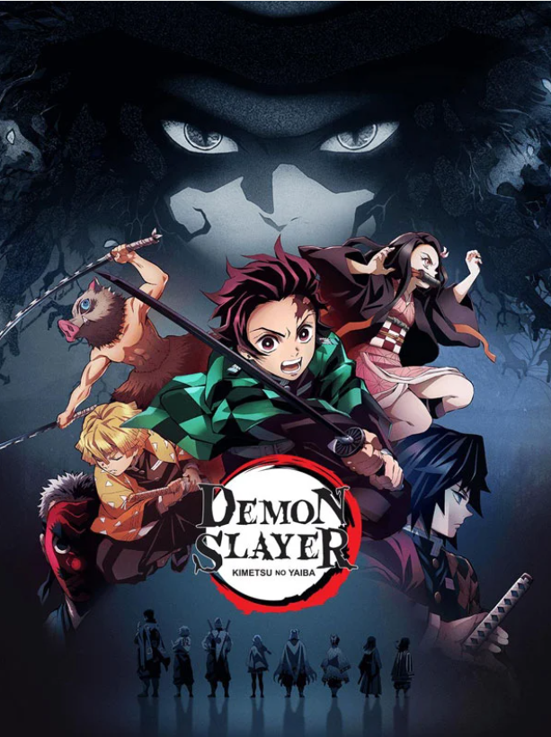
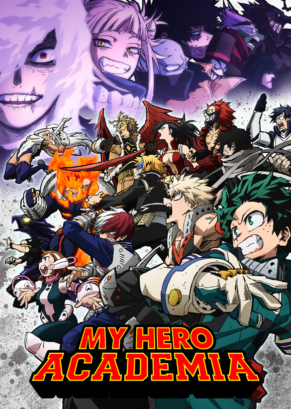
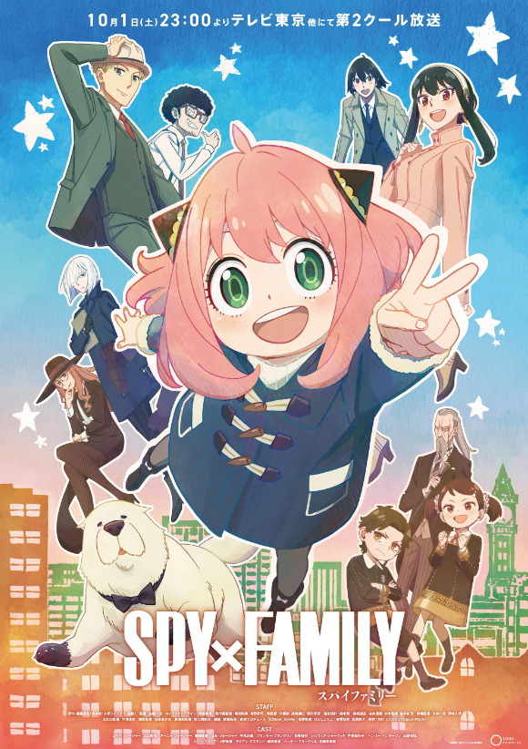
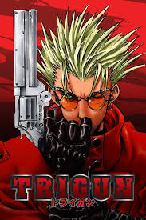
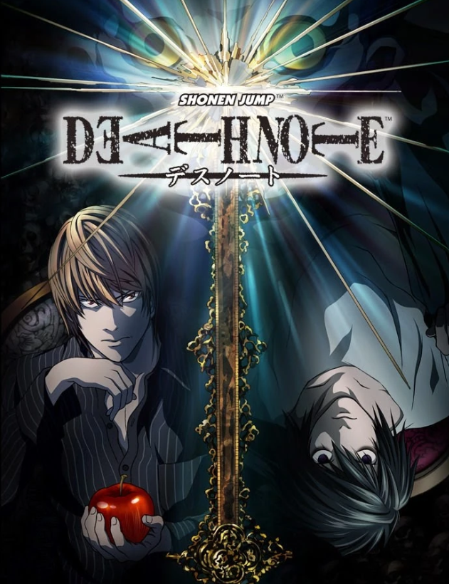

| Cover |
Main Character |
Side Characters |
Main Villain(s) |
Story/Plot |
Messages/Themes |
 |
Naruto Uzumaki |
Sasuke Uchiha, Kakashi Hatake, Sakura Haruno, Jiraiya, and many (MANY) others. |
Orochimaru, the Akatsuki, Madara Uchiha, Kaguya Otsutsuki. |
Set in the Village Hidden in the Leaves, a ninja village, Naruto Uzumaki lives with one goal: to be the most powerful ninja and become Hokage, the leader and prime role model for all the villagers in the land. Born with a demon fox spirit inside of him, he is shunned by the other villagers and fellow classmates, which makes him more desperate to overcome their hate and prove them wrong. Despite his setbacks, he is able to become a ninja and start training and doing missions; fighting many villains and saving other people despite differences they have. |
- Naruto has several life lessons, the biggest one being to never give up. Even though he faces several struggles, he perseveres through them to see through to his goal. Teamwork, leadership, and being able to learn are a few other messages covered in certain challenges being faced that are good life lessons.
- Many characters try to get revenge throughout the series, which is shown to end in loneliness and emptiness. It is stated that pain does not define a person, rather they can learn and grow from it and should instead find other ways to express grief and sadness.
- Some serious themes shown are trauma, depression, and even insanity. The show has several characters that “snap” and decline mentally, so it touches on these important topics and shows that receiving help and communicating with others can be very good. As such, the importance of forgiveness and understanding is another theme, as even after people are hurt, being able to let go is essential to move forward.
|
|  |
Tanjiro Kamado |
Nezuko Kamado, Zenitsu Agatsuma, Inosuke Hashibira, the Hashira. |
Muzan Kibutsuji, Lower Moon Demons, Upper Moon Demons. |
In a world full of demons, many live in blissful ignorance of the horrors surrounding them because of the demon slayers that protect them at night. One day, Tanjiro Kamado is returning to his family to find that everyone was slaughtered, except for his younger sister, Nezuko. Desperate to save her, he flees to find help, only to discover that she was turned into a demon herself. Receiving assistance, he goes on to become a demon slayer to get revenge on the master demon that afflicted all this pain on him and many others, while trying to find a way to turn his sister back into a human. |
- Demon Slayer teaches about trusting and working with others. There are several unique characters, but they are willing to work together for the greater good, putting their difference aside.
- Tanjiro is a very compassionate person, so he shows how to be understanding and empathetic for everyone, even if they are enemies. He shows that understanding people’s situations is important in real life to ensure that you have a better grasp of why a person acts a certain way or does things that may be wrong to most.
- While facing demons, the characters show that even while situations may be scary, it is important to see them through and try your best to succeed.
|
|  |
Izuku Midoriya |
Bakugo Katsuki, Shoto Todoroki, Uraraka Ochaco, All Might, and many others. |
Shigaraki and All for One |
In a world where 80% of people are born with quirks (super abilities,) villains and superheroes are a common sight. With so much of the world having abilities, being a superhero has even become an occupation attainable for many. Quirkless Izuku Midoriya was part of the rare 20% but aimed to be a hero despite his lack of powers. When his idol, the symbol of peace, All Might, appears and offers him some power, he gladly accepts and begins to attend the most prestigious super hero school, UA, working to become the #1 hero. |
- The biggest theme would be never giving up on dreams. Despite all the people saying he couldn’t and the physical barriers he had to overcome, Izuku kept trying and was able to enter the best school, showing that anybody could be a hero if they just tried.
- Another important theme is helping others, since many characters selflessly help their friends and even strangers, showing how kindness and selflessness is important in everyday life.
- Being empathetic and caring is another theme shown, since looking into the villain’s lives and learning about their tough experiences can help show why they did what they did and how to help them recover from traumatic experiences.
|
|  |
Loid Forger, Anya Forger, and Yor Forger |
Franky, Bond Forger, Nightfall, Damian Desmond |
Donovan Desmond |
In a world on the verge of war, a Westalis spy, Twilight, goes undercover with the intent of uncovering information from Donovan Desmond, who poses a threat to them. Being a recluse, there is only one way seen to invade Desmond’s private sphere; by having a child attend a prestigious school that his son attends and have them become an imperial scholar. As he was an adult, the only way to carry out this plan was to adopt a child and marry someone to pose as his wife. Little did he know, his wife happened to be a deadly assassin, and his child a curious and playful telepath, each desperate to conceal their identities within this fake family. |
- Spy X Family has some important messages, one of them being to have trust in others. There are many scenarios where Loid needs to rely on others to pull off a mission, showing how teamwork is important.
- Since war is a huge topic, the anime shows how important working to preserve peace is, which does require compromises and the ability to listen to others. It also goes into things like political parties and how that can lead to blind hatred towards people, which is important to avoid when considering peace.
- Parenting and family is another huge thing, since Loid isn’t sure how to act as a parent towards Anya or act towards Yor, and he explains how he’s learned to listen to her and care for both of them over time, showing how familial connections in essential.
|
 |
Nagisa Shiota and Koro Sensei |
Karma Akabane, Kaede Kayano, the 3-E Class |
Shiro and Principal Asano |
In class 3-E, there are the misfits and kids seen as a lost cause. Most students thought there was no way they could really further their education, so they were shocked when government agents entered their classroom and declared that this was to be a classroom that would train them to be assassins by none other than their target who happened to be an octopus-like alien capable of destroying the earth. Having only until the end of May to kill their teacher, they have to try and balance regular learning and handling the fact they would have to kill the best teacher they ever had. |
- There are so many messages in Assassination Classroom, one of the biggest being the ability to believe and trust in yourself to get better at things. There are many times when they feel the desire to give up, but their teacher supports them so they can continue confidently.
- However, Koro-Sensei also consistently knocks his students down so they can learn from their mistakes, which is another important thing. Even if you are good at something, he shows that there is always room to improve.
- Knowing your limits is also something discussed, since knowing your personal limits shows you where to improve and not stress yourself out by trying to do something you can’t now.
- Creativity is a good theme shown, since Koro-Sensei seems unkillable, which encourages kids to get out of their comfort zones and try any kind of solution.
|
|  |
Vash the Stampede |
Meryl Stryfe, Millie Thompson, Nicholas D. Wolfwood |
Millions Knives |
On a desolate planet, humans struggle to survive after having destroyed earth. Relying heavily on plants that give them their necessities, there is often conflict that breaks out between towns and people, the most famous being known as Vash the Stampede. Nicknamed “the humanoid typhoon,” it is said that he purposefully causes harm everywhere he goes, but when reporters Meryl and Millie find him, they discover that he is a peace-loving pacifist. Wondering why he currently has a $$60 billion bounty on his head, they follow him around hoping to find out more about him while stopping conflicts. |
- In Trigun, one of the main messages is to have hope. Despite all the bad things that happen, Vash holds out hope that the world will change and become a better place if people realize they aren’t all that different.
- Morals and respect for life is also a huge topic covered, since Vash thinks everything and everyone has value, while Millions Knives does not, viewing humans as insignificant creatures unworthy of existence. Knives and Vash also have issues with how they were treated, being discriminated against since they were different, which is yet another theme covered.
|
|  |
Light Yagami |
L, Misa Amane, Ryuk |
Light Yagami |
Light Yagami is an ordinary high school student, until one day, a magical note is dropped from the sky. Acquiring it, he learns that a Shinigami, God of Death, Ryuk, dropped it for fun to see what people would do. Discovering he now had the ability to kill people simply by writing their names, Light swears to eliminate evil humans and become a God known as “Kira.” The legendary detective known as L starts to investigate the mysterious deaths and the two find themselves face-to-face. Light hopes to find L's real name, while L wants to find out if Light is Kira, so the two must conceal their identities while racing to defeat the other first. |
- Death Note follows the story of the main villain, which allows viewers to see how Light thought he was being righteous and doing the right thing, while in reality, he was seen as a psychotic mass murderer. The show brings in the question of ethics and morals, since he begins doing things for the right cause, but slowly becomes insane and desperate to conceal his identity, even at the sake of innocent people.
- Justice is a huge theme covered as the police and L believe that it should be delivered synonymously rather than having one person dictate who should live or die based off a few actions.
- It is also seen that power is not everything, and people can easily be corrupted by it, leading to bad decisions and actions being made.
|